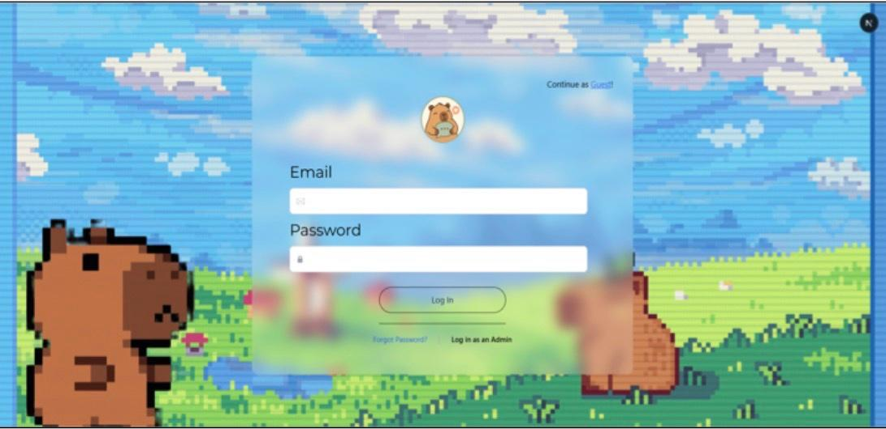
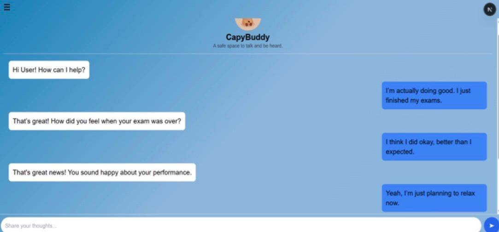
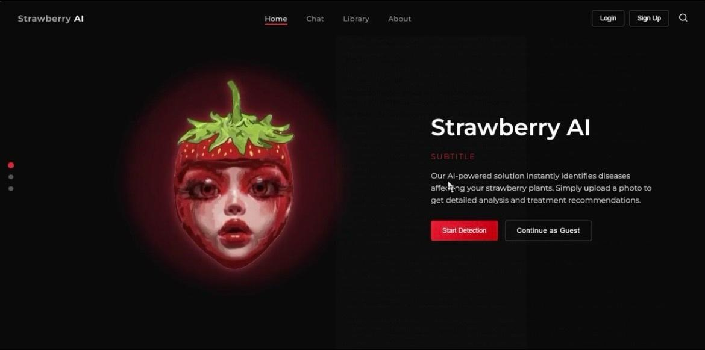
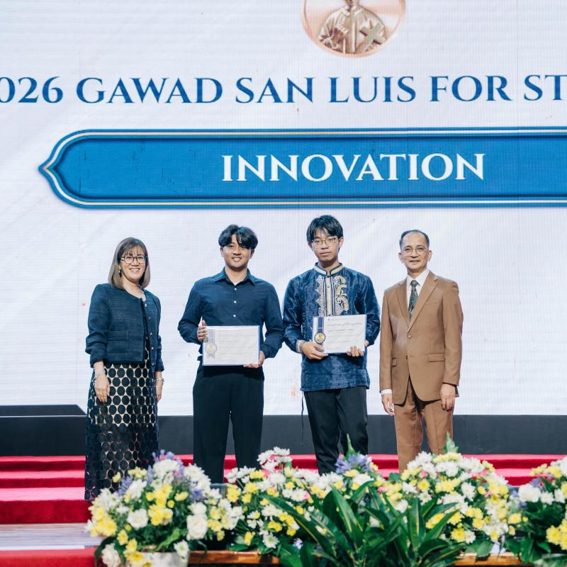
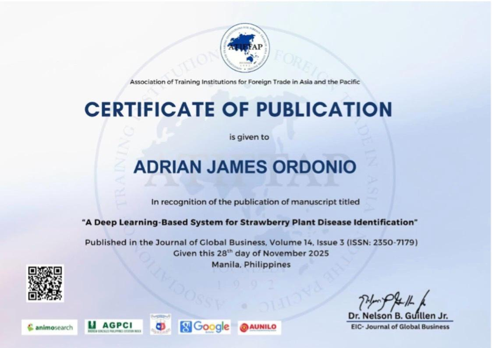
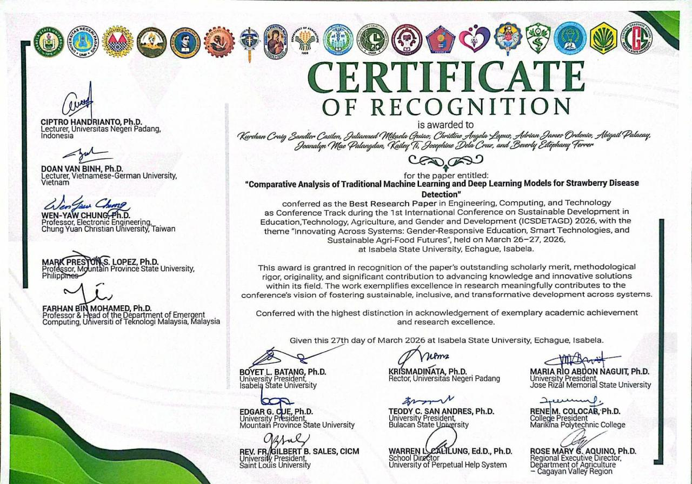

Hello, I'm
Adrian James Ordonio
Computer Science Graduate

About Me
Hi! I'm Adrian, a Computer Science graduate with a passion for building software that solves real-world problems. During my university years, I worked on projects involving artificial intelligence, web development, data analytics , and software engineering. I enjoy learning new technologies, turning ideas into working applications, and continuously improving my skills as a developer. My goal is to build reliable and impactful software while growing into a full-stack software engineer.
Experience
Intern
Department of Information and Communications Technology (DICT-CAR)
June 2025 - July 2025
Education
Saint Louis University
Bachelor of Science in Computer Science
Cum Laude
August 2022 - May 2026
Technical Skills
Programming Languages
- Java
- Python
- JavaScript
- PHP
- SQL
- C++
Web Technologies
- React
- Next.js
- Laravel
- Node.js
- HTML
- CSS
Tools
- Visual Studio Code
- Google Colab
- Excel
- Git
- Github
Projects
AI Emotional Support Chatbot (Thesis)
Technologies: Next.js, Laravel, FastAPI, Python, MySQL
Developed an AI-powered emotional support chatbot for university students using Next.js, Laravel, FastAPI, and MySQL, integrating a LoRA fine-tuned LLaMA 3.1 model with crisis-risk detection and emergency hotline recommendations for safe and empathetic user support.


Strawberry Disease Identification System
Technologies: Python, TensorFlow/Keras, MobileNetV2, HTML, CSS, JavaScript
Co-developed a deep learning-based strawberry disease detection system using MobileNetV2 and a dataset of 7,398 annotated images, achieving 99% classification accuracy across seven disease categories and evaluating performance using standard machine learning metrics.

Achievements
Published "A Deep Learning-Based System for Strawberry Plant Disease Identification"
Published "A Deep Learning-Based System for Strawberry Plant Disease Identification" as a co-author in the Journal of Global Business Online Journal (Volume 14, Issue 3, ISSN 2350-7179), November 2025.


Best Research Paper in Engineering, Computing, and Technology
Comparative Analysis of Traditional Machine Learning and Deep Learning Models for Strawberry Disease
Co-authored "Comparative Analysis of Traditional Machine Learning and Deep Learning Models for Strawberry Disease", awarded Best Research Paper in Engineering, Computing, and Technology during the 1st International Conference on Sustainable Development in Education, Technology, Agriculture, and Gender and Development, held at Isabela State University, March 2026.

Contacts
Email: adrianordonioworks@gmail.com
Phone Number: (+63) 998-731-9529
LinkedIn: linkedin.com/in/adrian-james-ordonio